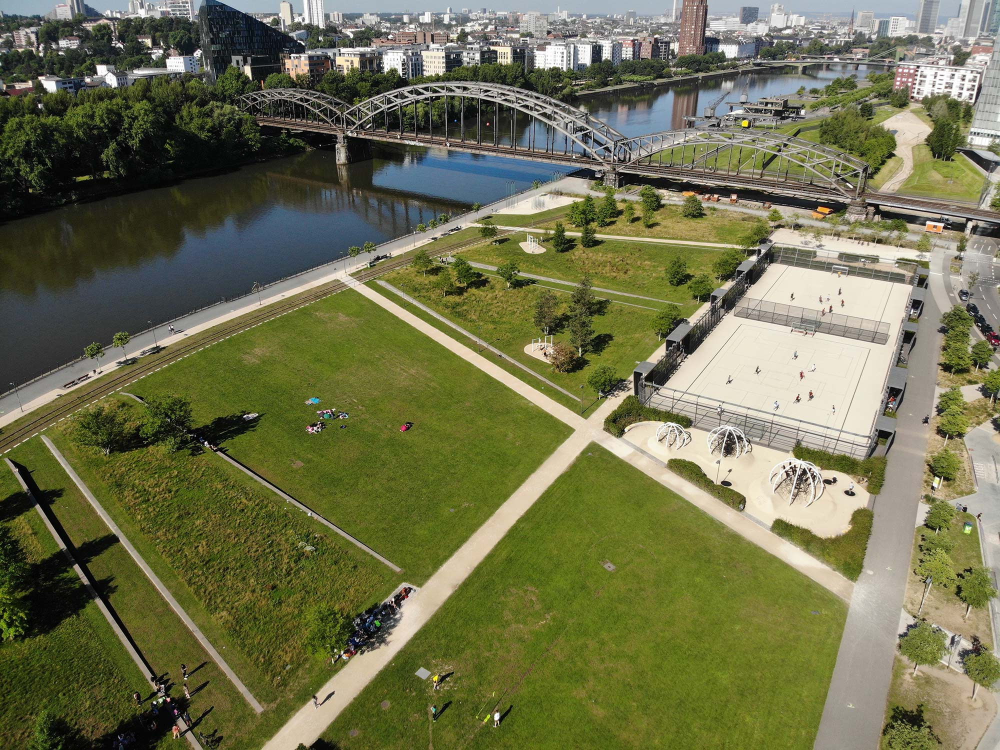
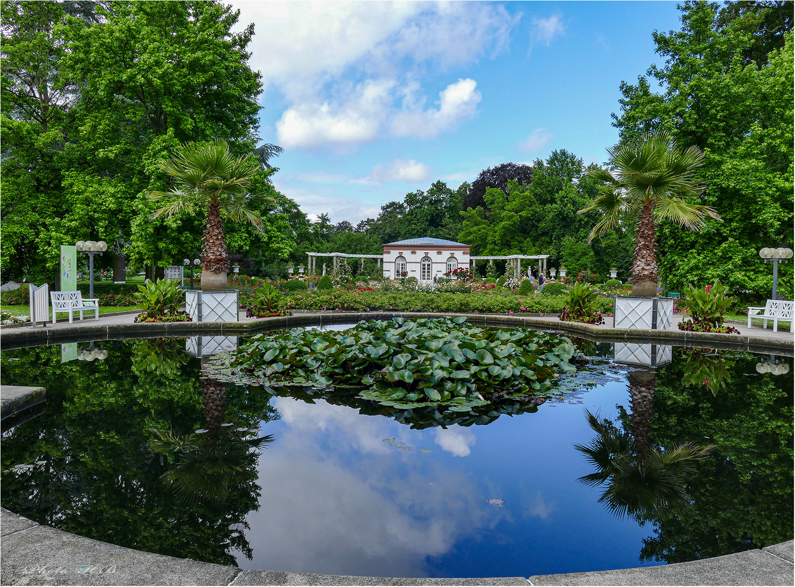
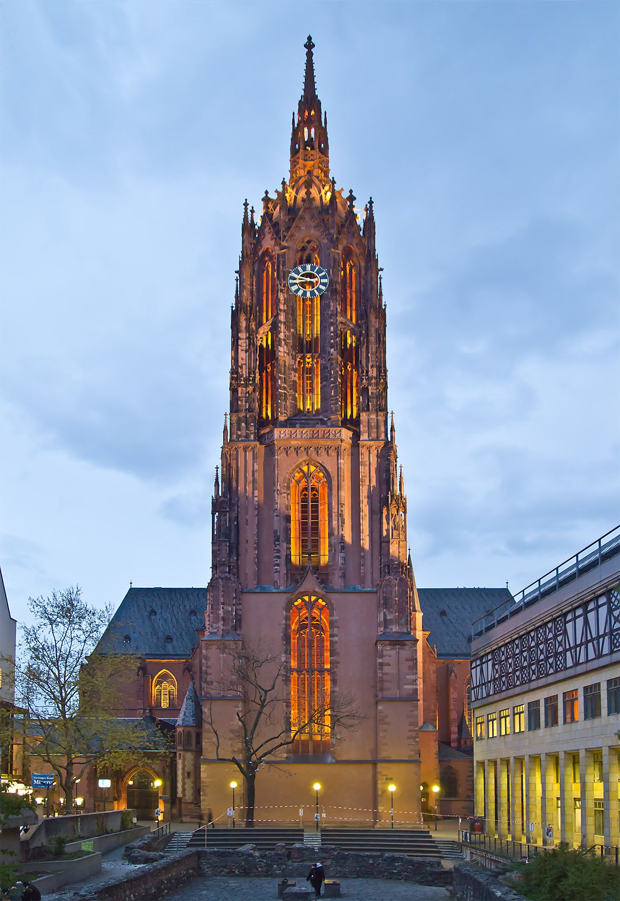
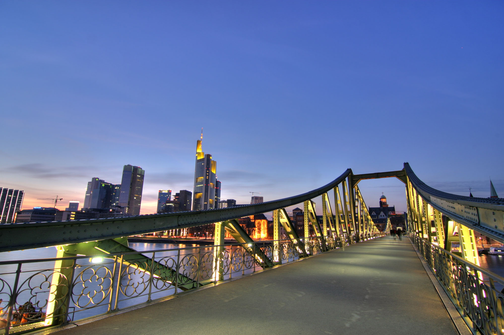

Auf dieser Seite lernen sie Sehenswürdigkeiten von Frankfurt kennen. Sie
werden einen Einblick über die Vielfalt historischer, kultureller und
architektonischer Höhepunkte Frankfurts erhalten.
Römer
Der Frankfurter Römer, ein historisches Wahrzeichen, ist das
Rathaus der Stadt Frankfurt am Main und ein Symbol für die
Geschichte und Tradition der Region. Seine Geschichte reicht
zurück bis ins 15. Jahrhundert, und das markante Gebäude mit
seiner beeindruckenden Fassade ist ein bedeutender Treffpunkt
für Einwohner und Besucher gleichermaßen.
Der Römerberg, der Platz vor dem Römer, ist ein lebendiger
Ort, der von historischen Fachwerkhäusern und malerischen
Gebäuden umgeben ist. Hier finden regelmäßig
Veranstaltungen, Messen und Festlichkeiten statt, was den
Platz zu einem pulsierenden Zentrum der Stadt macht.
Der Römer selbst besteht aus mehreren miteinander verbundenen
Gebäuden, die im Laufe der Jahrhunderte erweitert und umgestaltet
wurden. Seine charakteristische Silhouette und die imposante
Fassade machen es zu einem der bekanntesten und meistfotografierten
Gebäude in Frankfurt.
Der Römer ist nicht nur ein Verwaltungszentrum, sondern auch ein
Symbol für Einheit und Demokratie. Hier werden wichtige
Veranstaltungen wie die Verleihung des Friedenspreises des
Deutschen Buchhandels und andere offizielle Empfänge
abgehalten, die die Bedeutung dieses historischen Ortes für
die Stadt und das Land unterstreichen.
Hier noch ein kurzes Video vorallem über die Geschichte
des Rathauses auf dem Frankfuter Römer:
Paulskirche
Die Frankfurter Paulskirche, gelegen im Herzen der
Stadt, ist ein historisches Wahrzeichen von großer
symbolischer Bedeutung für Deutschland. Erbaut
zwischen 1789 und 1833, diente sie einst als
Kirche, wurde aber später zu einem zentralen Ort
in der deutschen Geschichte.
Die Architektur der Paulskirche ist ein
bemerkenswertes Beispiel für den neugotischen
Stil des 19. Jahrhunderts. Ihr beeindruckendes
Äußeres mit den spitzen Türmen und den gotischen
Elementen zieht Architekturliebhaber an.
Im Inneren der Kirche befindet sich eine
große, runde Halle mit einer markanten
Kuppel. Die Innenarchitektur ist schlicht und
elegant, und das Licht fällt durch die hohen
Fenster herein, was eine ruhige und friedliche
Atmosphäre schafft.
1848/49 war sie Schauplatz der Deutschen
Nationalversammlung, dem ersten frei gewählten
Parlament des Landes. Hier wurde die erste
demokratische Verfassung Deutschlands
verabschiedet, die trotz ihres Scheiterns einen
Meilenstein in der Entwicklung der deutschen
Demokratie markiert.
Die Paulskirche wird auch oft als Ort für kulturelle
Veranstaltungen genutzt, darunter Konzerte, Ausstellungen
und Diskussionsforen. Ihre multifunktionale Nutzung macht
sie zu einem lebendigen Ort, der nicht nur historische
Bedeutung hat, sondern auch ein Zentrum für zeitgenössische
kulturelle Ereignisse ist.
Das umliegende Gebiet der Paulskirche ist eine beliebte
Anlaufstelle für Einheimische und Touristen
gleichermaßen. Die umliegenden Straßencafés und Restaurants
bieten eine schöne Gelegenheit, die Atmosphäre der Gegend
zu genießen und die Schönheit der Umgebung zu erleben.
Die Paulskirche hat auch eine symbolische Bedeutung
als Ort der Einheit und des demokratischen
Engagements, der Menschen aus verschiedenen
Gesellschaftsschichten und Kulturen zusammenbringt, um
Ideen und Diskussionen zu fördern.
Hier noch ein kurzes Video zur Paulskirche:
Chinesischer Garten
Der Frankfurter Chinesische Garten, auch bekannt als
"Garten des Himmlischen Friedens", ist eine Oase der
Ruhe und Schönheit inmitten des hektischen Stadtlebens
von Frankfurt am Main. Dieser Garten wurde als Geschenk
der Partnerstadt Guangzhou in China an Frankfurt errichtet
und im Jahr 1989 eröffnet. Auf einer Fläche von etwa einem
Hektar bietet der Chinesische Garten eine authentische
Nachbildung traditioneller chinesischer Landschaftsgestaltung.
Mit sorgfältig angelegten Pavillons, kunstvollen
Brücken, einem Teich und einer Vielzahl von
Pflanzen, darunter Bambus, Magnolien und Lotusblumen, bietet
der Garten einen harmonischen Rückzugsort. Besucher können
die einzigartige Architektur bewundern, durch gepflegte
Wege schlendern und die friedliche Atmosphäre genießen. Der
Garten folgt den Prinzipien des Feng Shui und spiegelt die
chinesische Philosophie wider, die Natur mit der menschlichen
Existenz in Einklang zu bringen.
Der Chinesische Garten in Frankfurt ist nicht nur eine
Sehenswürdigkeit, sondern auch ein Ort der Entspannung
und des kulturellen Austauschs. Er lädt Besucher ein, die
Schönheit der Natur zu erleben und gleichzeitig eine Verbindung
zur fernöstlichen Kultur herzustellen, die inmitten der
lebhaften Metropole Frankfurt eine besondere Ruheoase bietet.
Hier noch ein kurzes Video zum Chinesischen Garten:
Alte Oper
Die Alte Oper in Frankfurt am Main ist ein prachtvolles
architektonisches Juwel und ein bedeutendes Kulturzentrum
der Stadt. Ursprünglich im neoklassizistischen Stil
erbaut, erlitt das Gebäude schwere Schäden während des
Zweiten Weltkriegs und wurde später in den 1980er Jahren
aufwendig restauriert.
Die Alte Oper, mit ihrer majestätischen Fassade und den
prunkvollen Säulen, ist heute nicht nur ein Symbol für
die Wiederbelebung Frankfurts nach dem Krieg, sondern
auch ein zentraler Veranstaltungsort für Konzerte, Opern, Ballette
und kulturelle Events. Das Innere beeindruckt mit einem opulenten
Konzertsaal, der für seine exzellente Akustik bekannt ist und ein
breites Spektrum an Musikdarbietungen beheimatet.
Dieses geschichtsträchtige Gebäude vereint
künstlerische Pracht mit zeitloser Eleganz und bleibt
ein wichtiger Bestandteil des kulturellen Erbes von
Frankfurt, während es gleichzeitig ein lebendiges
Zentrum für Kunst und Musik in der Region darstellt.
Hier noch ein kurzes Video zur Alten Oper:
Frankfurter Börse
Die Frankfurter Wertpapierbörse, allgemein bekannt als
Frankfurter Börse, ist eine der bedeutendsten Börsen
weltweit und ein zentraler Bestandteil des Finanzwesens
in Deutschland und Europa. Gegründet im Jahr 1585, hat
sie eine lange Geschichte und ist heute einer der
wichtigsten Handelsplätze für Wertpapiere wie
Aktien, Anleihen und Investmentfonds.
Die Börse spielt eine entscheidende Rolle im
internationalen Finanzmarkt, insbesondere durch den
Handel mit deutschen Blue-Chip-Aktien wie
DAX-Unternehmen. Der DAX (Deutscher Aktienindex) ist
der Leitindex der Börse und repräsentiert die
Wertentwicklung der 30 größten und liquidesten
Unternehmen in Deutschland.
Die Architektur des Börsengebäudes selbst, ein
moderner Neubau am Standort der alten Börse, spiegelt
die Bedeutung des Finanzwesens in Frankfurt
wider. Die Handelsaktivitäten erfolgen größtenteils
elektronisch, wobei modernste Technologie und Systeme
den Handel erleichtern und die Transparenz
und Effizienz erhöhen.
Die Frankfurter Börse fungiert als wichtige
Plattform für nationale und internationale Investoren
sowie Unternehmen, die Kapital beschaffen
möchten. Ihre Rolle als Finanzdrehscheibe hat
Frankfurt als bedeutendes Finanzzentrum Europas
gestärkt und ihre Bedeutung für die globalen
Finanzmärkte weiter unterstrichen.
Hier noch ein kurzes Video zur Frankfurter Börse:
Abschluss

Hafenpark

Palmengarten

Kaiserdom

Eiserne Steg
Frankfurt am Main präsentiert eine faszinierende
Vielfalt an Sehenswürdigkeiten, die
Geschichte, Kultur und Architektur miteinander
verweben. Von den historischen Stätten wie dem
Römerberg und dem Kaiserdom St. Bartholomäus bis
hin zu modernen Wahrzeichen wie dem Main Tower
und der pulsierenden Einkaufsmeile Zeil gibt es
in dieser Stadt für jeden Besucher etwas zu entdecken.
Neben den bereits erwähnten Attraktionen
sollten auch der Hafenpark, der
Palmengarten, der imposante Frankfurter
Kaiserdom und der romantische Eiserne Steg nicht
unerwähnt bleiben. Der Hafenpark lädt zu entspannten
Spaziergängen entlang des Mainufers ein, der
Palmengarten verzaubert mit seiner botanischen
Vielfalt, der Kaiserdom beeindruckt mit seiner
gotischen Architektur und der Eiserne Steg bietet
einen malerischen Blick auf die Skyline Frankfurts.
Natürlich gibt es noch viele weitere bemerkenswerte
Orte in Frankfurt, die das kulturelle Erbe und die
Schönheit dieser lebendigen Stadt
bereichern. Egal, ob es sich um Museen, Parks, historische
Gebäude oder künstlerische Viertel handelt, Frankfurt
bietet ein reichhaltiges Angebot an
Sehenswürdigkeiten, die Besucher aus aller Welt
anziehen und ein unvergessliches Erlebnis bieten.
Frankfurt ist nicht nur für seine Sehenswürdigkeiten
bekannt, sondern auch für seine reiche kulturelle
Szene, erstklassige Restaurants, lebendige Märkte,
pulsierende Veranstaltungen und vieles mehr.
Um aber noch mehr über die Sehenswürdigkeiten
von Frankfurt zu erfahren kannst du mit den
Knöpfen auf weitere Seiten für mehr Informationen.